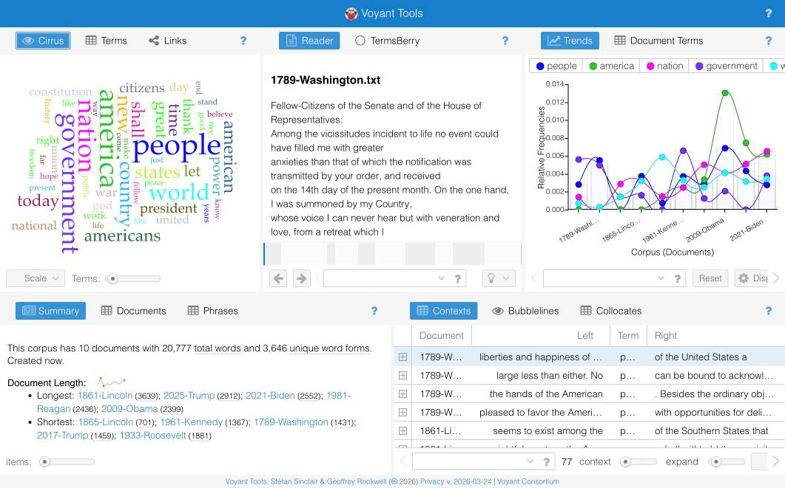
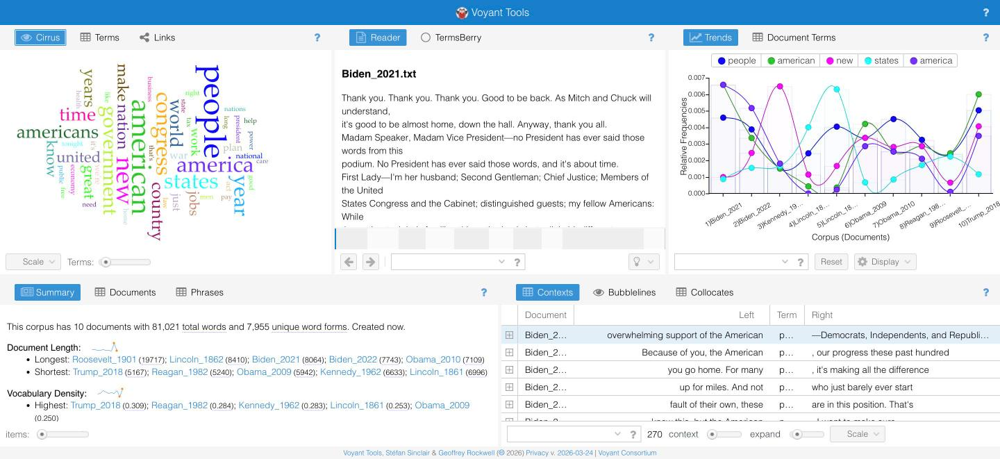
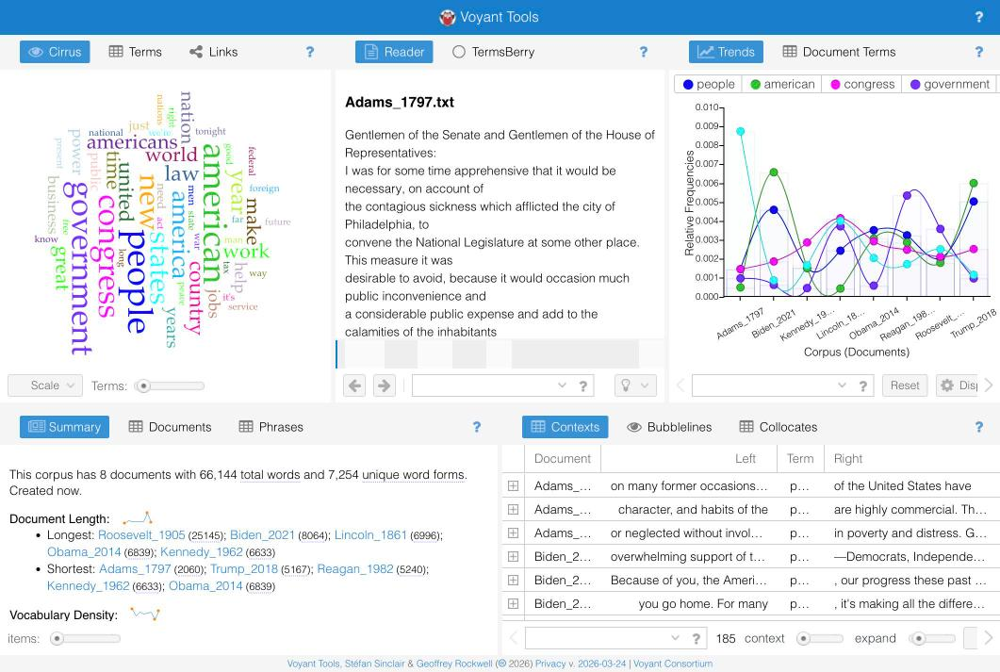
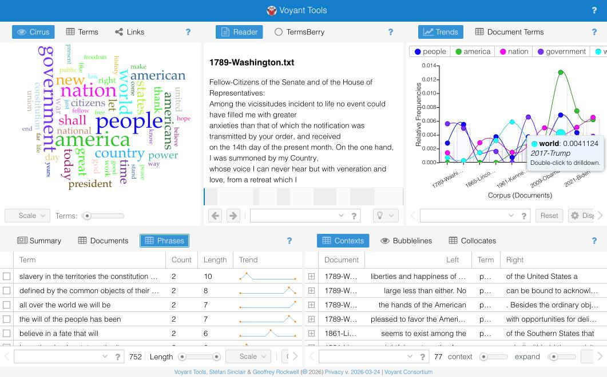
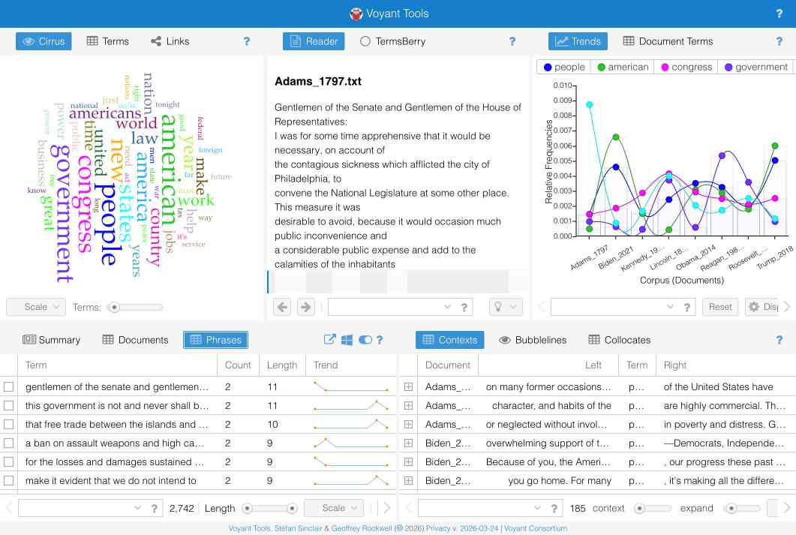
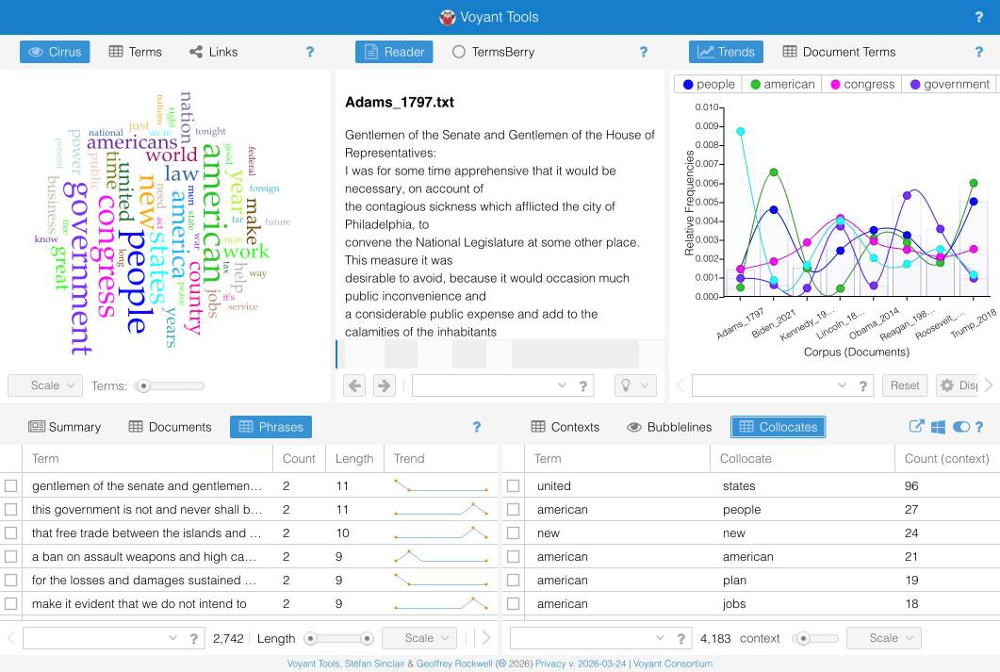

For this corpus analysis project, I am comparing two collections of U.S. presidential speech texts: Presidential Inaugural Addresses (1789–2025) and State of the Union Addresses. Both corpora come from the introDH-Hub text collections assembled for this course.
These two speech types are interesting to compare because they serve very different rhetorical purposes. Inaugural addresses are ceremonial, visionary, and meant to unite the country under a new (or continuing) administration. State of the Union addresses are more policy-focused, responding to current events and legislative priorities. By running n-gram and word frequency analysis on both corpora, we can see how the language of aspiration in inaugurals differs from the language of governance in State of the Union speeches.
You can view the raw text files used for this analysis in the textCorpora directory of my GitHub repo.
I used Voyant Tools to explore word frequencies, word clouds (Cirrus), and term clusters across both corpora. Below are screenshots and observations from the Voyant analysis.

The Cirrus word cloud for the inaugural addresses corpus shows that words like government, nation, people, world, and freedom dominate. This reflects the ceremonial and aspirational tone of inaugural speeches, which consistently appeal to broad national values and ideals. The prominence of freedom and people suggests that presidents, across all eras, frame their opening address as a covenant with the citizenry and a recommitment to foundational principles.

The State of the Union word cloud looks noticeably different. Words like congress, federal, law, program, and year appear far more prominently compared to the inaugural corpus. This makes sense: State of the Union speeches are working documents that address specific legislation, budgets, and policy proposals. The language is more institutional and less idealistic than inaugural rhetoric.

Placing the two word clouds side by side highlights a core contrast: inaugural addresses center on abstract ideals (freedom, nation, world), while State of the Union speeches center on concrete institutions and processes (congress, law, program). Both corpora share the word government as a top term, but the surrounding vocabulary tells very different stories about presidential communication.
I used AntConc to explore n-gram patterns in both corpora, starting with 3-grams and adjusting from there. N-grams reveal the most common multi-word phrases, which can expose the formulaic language politicians rely on.

The most frequent 3-grams in the inaugural corpus include phrases like “the United States”, “of the people”, and “to the people”. These reflect the rhetorical conventions of inaugural speeches: direct address to citizens, invocations of national identity, and constitutional framing. Phrases with people appear repeatedly, reinforcing that inaugurals are fundamentally speeches to and about the public.

The State of the Union 3-grams look markedly different, with phrases like “the Congress of”, “I recommend that”, and “the United States” appearing frequently. The phrase “I recommend that” is particularly telling—it almost never appears in inaugurals but is a staple of State of the Union speeches, where the president is actively proposing legislation to Congress.

When I traced the phrase “the United States” across both corpora using AntConc's KWIC view, an interesting pattern emerged. In the inaugural corpus, “the United States” tends to appear in phrases about national identity and global standing (e.g., “the United States and the world”). In the State of the Union corpus, the same phrase clusters around policy and institutional references (e.g., “the United States government”, “the United States Congress”). The same three words carry entirely different rhetorical weight depending on the speech type.
This comparative corpus analysis reveals that presidential rhetoric is not monolithic — it shifts substantially depending on the occasion. Inaugural addresses use the language of values, ideals, and national identity to establish a president's vision and build emotional connection with citizens. State of the Union addresses, by contrast, use institutional language oriented toward Congress, policy, and governance.
Even when the same phrases appear in both corpora (like “the United States”), the surrounding context reveals fundamentally different rhetorical goals. This is exactly the kind of discovery that n-gram and KWIC analysis makes visible: patterns that would be nearly impossible to detect by reading hundreds of speeches manually become clear at a glance through computational text analysis.
Future analysis could explore how individual presidents' language compares within each corpus — for example, whether modern inaugurals (post-1980) differ significantly from 19th-century ones in vocabulary, or how State of the Union rhetoric changed after major national crises.